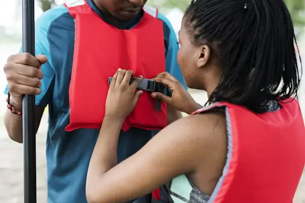
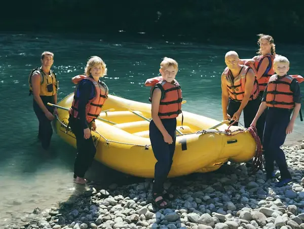
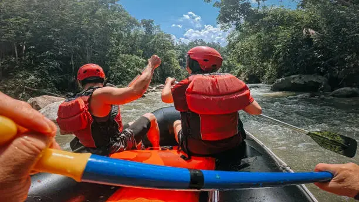
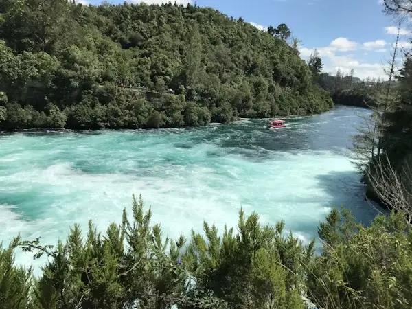
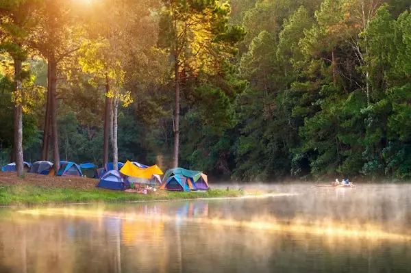

Contact us to make a reservation today!
Rapids!
Select your Getaway
Half-Day Adventure - $90

Experience the thrill of our Half-Day White Water Rafting Trip, perfect for all skill levels. Choose a morning start at 8:30 AM or an afternoon departure at 1:30 PM, with each trip lasting about four hours from check-in to return. After a quick safety briefing and gear fitting, you'll head to the river for 2-3 hours of exciting rapids, scenic floats, and optional swimming, all guided by our experienced team. The trip ends back at base with time to relax and change. Pricing includes all equipment, transportation, and professional guides.
Full Day Adventure - $120

Take your adventure further with our Full-Day White Water Rafting Trip, designed for those who want the ultimate river experience. The day begins at 8:30 AM and wraps up around 4:30 PM, giving you a full day of excitement and exploration. After a safety briefing and gear fitting, you'll head to the river for 4-6 hours of rafting through a dynamic mix of thrilling rapids and scenic stretches, with time to swim, relax, and enjoy a riverside lunch included with your trip. Led by expert guides, this immersive experience combines adrenaline and natural beauty for an unforgettable day on the water. Pricing includes all equipment, transportation, lunch, and professional guide service.
2 Day Adventure - $300

Experience the ultimate river adventure with our 2-Day Overnight White Water Rafting Trip, perfect for those looking to fully immerse themselves in the outdoors. Your journey begins at 8:30 AM on Day 1 and concludes around 3:00 PM on Day 2, featuring extended time on the water with a mix of exciting rapids and relaxing scenic stretches. After a full day of rafting, you’ll arrive at a riverside campsite where you can unwind, enjoy a freshly prepared dinner, and sleep under the stars. Day 2 brings more rafting, stunning views, and plenty of memorable moments before returning to base. Pricing includes all rafting equipment, transportation, meals, camping gear, and professional guide service.
| Half Day Adventure | Whole Day Adventure | 2-Day Adventure | |
|---|---|---|---|
| Price | $75 | $120 | $300 |
| Meals included | NA | lunch | lunch, Dinner, Breakfast |
| Distance | 5 Miles | 8 Miles | 12 Miles |